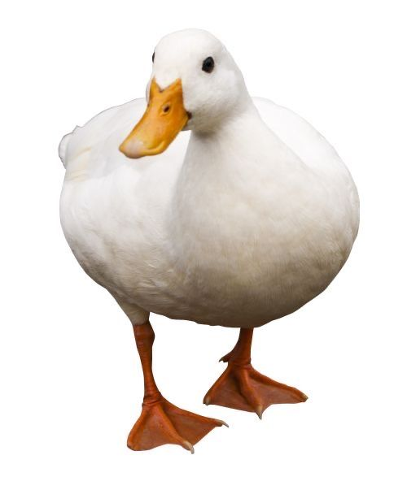

this is a nothingburger page - sometimes i just want to see my mouse react to different changes without it actually doing anything meaningfull - i want a digital fidget toy - like a childrens toy but on my computer - i hope this serves no utilitarian purpose -

Quackkk quack quack
quack quack quack quack qaucckckckkkkkkk quack